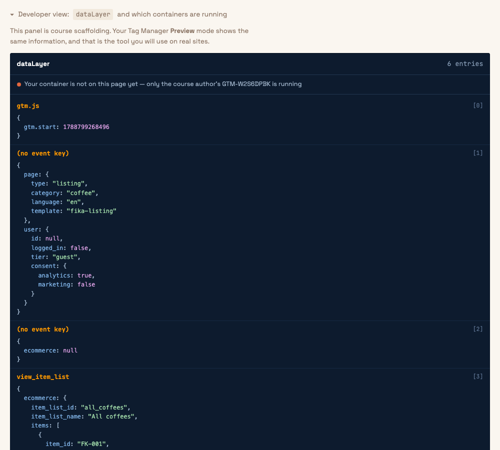

Read information the shop puts in the dataLayer
What you will do
Every page of the shop tells Tag Manager what kind of page it is, and whether the visitor is logged in. It does this by putting a small package of information in the dataLayer. In this exercise you will read that information, use it to decide when a tag runs, and send it to Google Analytics.
You will build three things: variables that read the information, a trigger that only fires on product pages, and a tag that sends an event to Google Analytics.
Step 1 Look at what the shop sends
Open the All coffees page of the shop, online, at your own address.
Scroll to the bottom and click Developer view. The panel shows every entry in the dataLayer, oldest first.
Look at the entry marked
[1]. It is the package the shop sends on every page.
The Developer view on the All coffees page. Entry [1] is the page information. Entry [3] is an ecommerce event; you will use those in exercise 4. Click the picture to see it full size.
The package has two parts. page says what kind of page this is. user says who is
looking at it. Each part has smaller parts inside it. For example, inside user there is
consent, and inside consent there is marketing. To point at that
value you write the names with dots between them: user.consent.marketing.
Step 2 Build four variables
A Data Layer Variable is a variable that reads one value from the dataLayer. You will build four.
In Tag Manager, click Variables in the menu on the left.
Scroll down to the section User-Defined Variables and click New.
Click the big box Variable Configuration. Choose Data Layer Variable.
In the field Data Layer Variable Name, type
page.type.Check that Data Layer Version says Version 2. If it says Version 1, change it. Version 1 does not understand the dots.
At the top left, where it says Untitled Variable, type the name
dlv - page.type. Click Save.Repeat steps 2 to 6 three more times with these values:
Name of the variable Data Layer Variable Name dlv - page.categorypage.categorydlv - user.tieruser.tierdlv - user.consent.marketinguser.consent.marketing
Step 3 Check the variables in Preview mode
Click Preview at the top right of Tag Manager. Enter the address of the shop's All coffees page and click Connect.
In the Tag Assistant tab, click Container Loaded in the list on the left.
In the middle of the page there are tabs: Tags, Variables, Data Layer. Click Variables.
Scroll down the list until you find your four variables.
dlv - page.typeshould have the valuelisting.Go to the shop window and click on one of the coffees. Go back to Tag Assistant. Click the new page in the list on the left, then Container Loaded, then Variables. Now
dlv - page.typesaysproduct.
Step 4 Build a trigger that only fires on product pages
In Tag Manager, click Triggers in the menu on the left. Click New.
Click the big box Trigger Configuration. Choose Page View.
Under This trigger fires on, choose Some Page Views. Three fields appear.
In the first field, choose
dlv - page.type. In the second, choose equals. In the third, typeproduct.At the top left, type the name
PV - product page. Click Save.
Step 5 Build a tag that sends an event to Google Analytics
Click Tags in the menu on the left. Click New.
Click the big box Tag Configuration. Choose Google Analytics: GA4 Event.
In the field Measurement ID, paste your
G-ID.In the field Event Name, type
view_product_page.Click Event Parameters to open it. Click Add parameter. In the left field type
page_category. In the right field, click the small icon that looks like a building block and choosedlv - page.category.Click Add parameter again. Left field:
user_tier. Right field: choosedlv - user.tier.Click the big box Triggering. Choose
PV - product page.At the top left, type the name
GA4 - view_product_page. Click Save.
Step 6 Test it
Go to the shop window. It is still connected to Preview mode. Open Coffees, then click on a coffee.
In Tag Assistant, click the product page in the list on the left, then Container Loaded. Under Tags Fired you should see
GA4 - view_product_page.Click on the tag. It shows the parameters it sent:
page_categoryiscoffeeanduser_tierisguest.Now click the All coffees page in the list on the left, then Container Loaded. The tag is under Tags Not Fired. That is correct: it is not a product page.
Go to analytics.google.com. Click Admin (the gear at the bottom left), then DebugView. Go to the shop window and open another coffee. Within a few seconds,
view_product_pageappears in DebugView. Click it to see the two parameters.
What you should see
- Four variables with values in the Variables tab in Tag Assistant. The values change from page to page.
- The tag fires on product pages and not on other pages.
- In DebugView in Google Analytics, an event called
view_product_pagewith two parameters.
If it does not work
- A variable has the value undefined. Check for spelling mistakes. Small and capital letters matter:
page.type, notPage.Type. Also check that the Data Layer Version is 2. - The variable is correct but the trigger never fires. Open the trigger and check that its type is Page View and the condition is exactly
dlv - page.typeequalsproduct. - Nothing appears in DebugView. Check the Measurement ID in the tag. Also try a browser window without extensions, because ad blockers stop Google Analytics.
gtm data layer variable nested,
ga4 debugview.
The practice shop
The exercises happen on these five pages. Each link opens in a new tab.
- 1Home pagecta_click, login
- 2All coffeesview_item_list, select_item
- 3One coffeeview_item, add_to_cart
- 4Checkoutbegin_checkout, purchase
- 5Subscribe formgenerate_lead
At the bottom of every shop page there is a grey line that says Developer view. Click it to see the dataLayer and which containers are running.